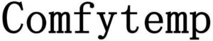

Trade Mark Journal No.2026/003 16 January 2026
WO0000001893870 (9,10,11,35)
Office of origin: China
Date of International Registration:19 September 2025
Date of designation in the UK:
19 September 2025

- Class 9
- Data processing equipment; downloadable mobile application software; downloadable computer application software; recorded computer programs; computer programs, downloadable software; recorded or downloadable computer software platforms; optical devices and instruments; computer software for enabling the transmission of photographs to mobile phones; computer software applications, downloadable; downloadable software as a medical device (SaMD).
- Class 10
- Low-frequency electrotherapy apparatus; electrotherapy instruments; medical electric heating pads; led light therapy masks; household electric beauty massage apparatus; orthopedic articles; medical fumigation apparatus; ultrasonic therapy apparatus.
- Class 11
- Electrically heated gloves; electric heating apparatus; foot warmers (electric or non-electric); electrically heated caps; facial sauna apparatus; non-medical fumigation apparatus; heat pads for warming; heating cushions, electric, not for medical purposes; USB-powered hand warmers; facial steamers.
- Class 35
- Providing an online marketplace for buyers and sellers of goods and services; presentation of goods on communication media for retail purposes; retail or wholesale services for medical supplies; organization of trade fairs for commercial or advertising purposes; online advertising on computer networks; providing information and advice to customers regarding the selection of products to purchase; advertising services; providing commercial information and advice to consumers regarding the selection of goods and services; providing product recommendations to consumers for commercial purposes.
Shenzhen Yicai Health Technology Co., Ltd.